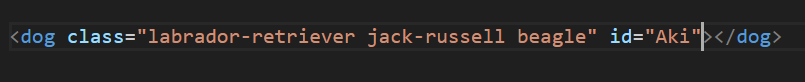

Classes versus IDs
What are IDs and Classes?
If we want to understand best practices associated with using classes vs. ids we first have to get an idea of what they are. So lets pretend you have a dog called Aki. You found her on the road while biking in Montenegro next to a rubbish bin. A small, skinny and malnutritional Labrador retriever puppy, about 4 weeks old. So in this scenario, the class of Aki is a Labrador retriever and the id is Aki.

The class defines some characteristics and aspects of what Aki looks like which is shared by all Labrador retriever. Think, short dense coat, a broad skull, thick muscular body, droopy triangular ears and a “otter” tail that curves slightly. The class of Labrador retriever can be put on many puppies and you get an idea of what they look like. However if you want some specifics, you will have to look at the id. In this case, the id is Aki. By looking into the id Aki, you will find that Aki is a girl, she was found in Montenegro, she is very sweet and cuddly and her favourite toy is a bungee cord nicknamed the big snake. So there you were confronted with a choice, leave Aki to starve to death or take her with you? If it was any other Labrador retriever, who knows but because Aki is unique you take her.

Classes are not unique but ids are
Like the title says, classes are not unique. Classes are used for stylings that you can apply to multiple objects. In our Aki dog analogy, the class Labrador retriever holds a set of stylings that all Labrador retrievers have in common. Here is the crazy part, Aki may of had more than one class. She looked like a Labrador retriever but not quite. She may of held some other classes too, such as a Jack Russell Terrier or even a beagle because her ears were quite triangular. The thing about classes is that one element can have multiple classes and the resulting element may be a mismatch of all of them combined.
Despite all of this, we knew one thing. Aki was unique. Like all ids, Aki had traits that were special to her and wasn’t shared with every Labrador retriever. She is sassy, loves roast chicken and was snuck across the Montenegro-Albanian border in a backpack while she slept. How is that for a unique attribute. In Albania she was given some more attributes to the Aki id. She was vaccinated for rabies, parvovirus and treated for fleas and ticks. Much like a class, ids can also be assigned styling, however an element can only have one id and each page can only have one element with that ID. This is true if you want to stick to best practices and pass code validation for established standards.

So what is the best practices associated with using classes vs ids?
- If you do not need to use one, don’t use one.
- Give ids and classes descriptive names
- Follow naming convention from DevAcademy i.e. - for spaces and no capitals
- You can reference ids with a # in the url of an anchor. The browser will attempt to locate the element with the associated id on the page.
- If it is unique, use an id and if it is generic, use a class